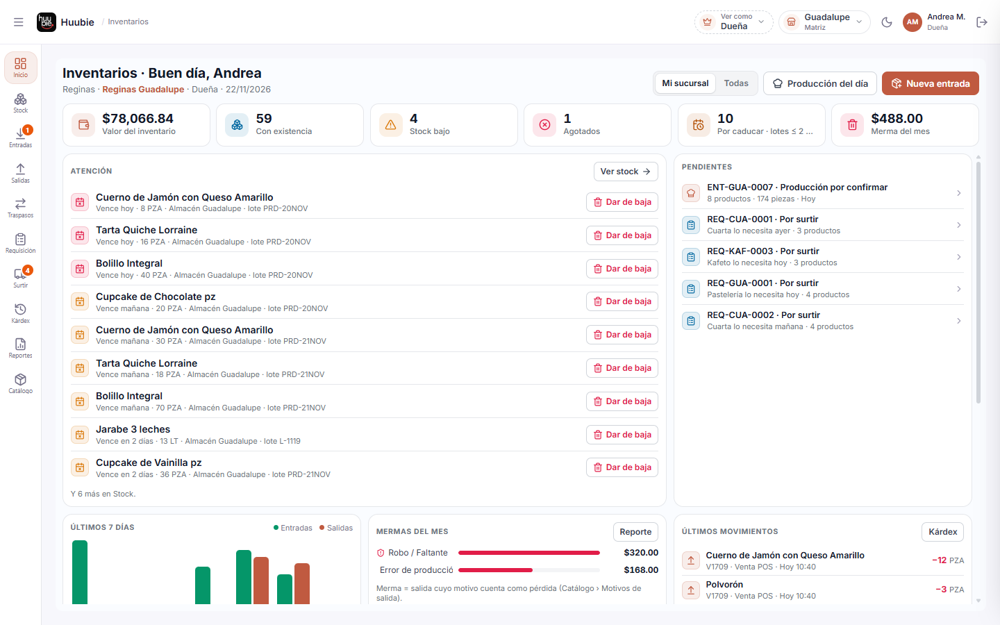
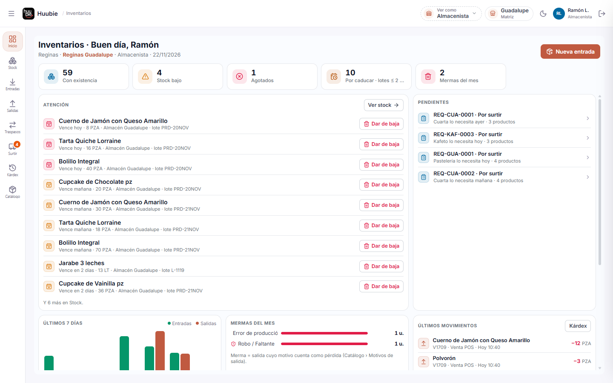
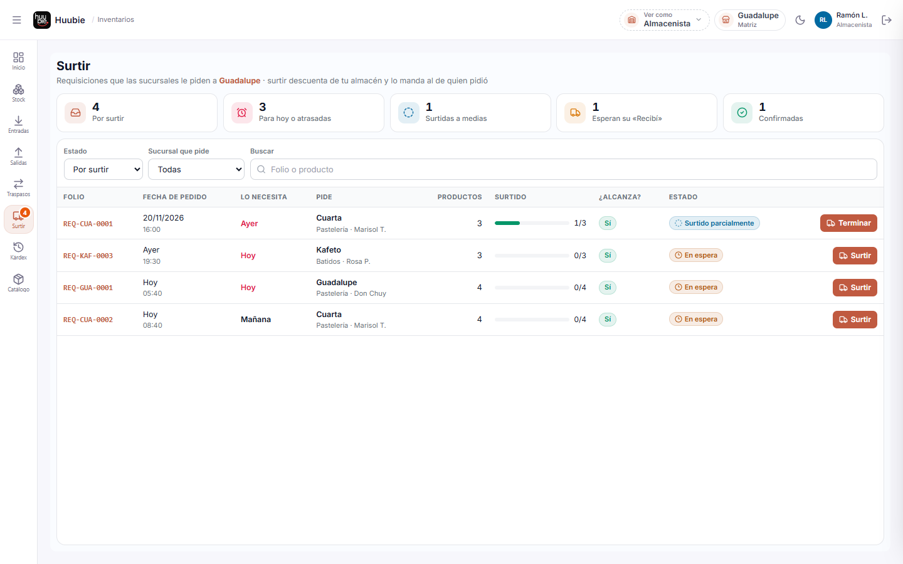
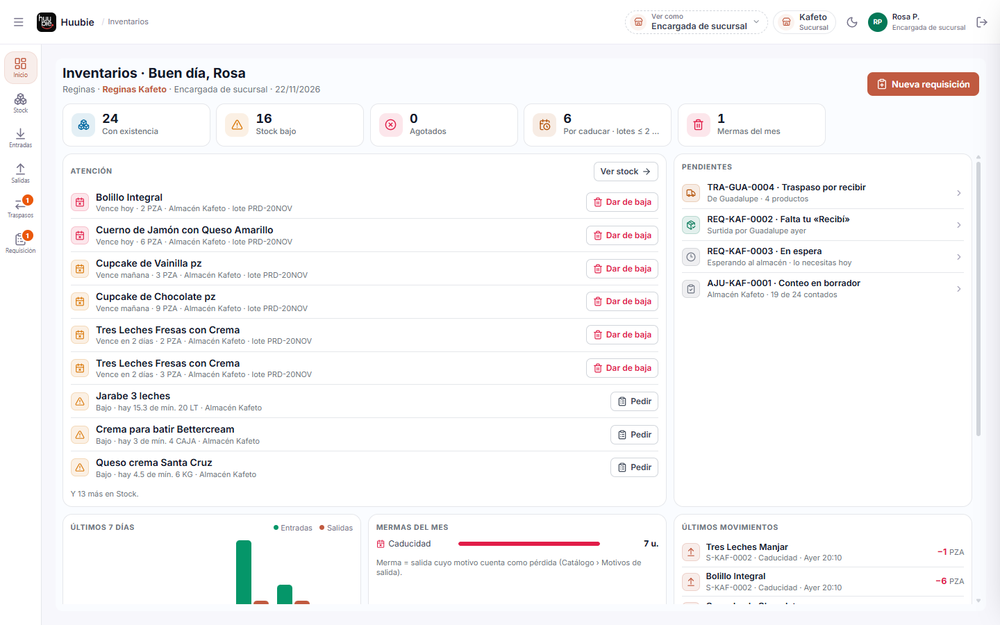
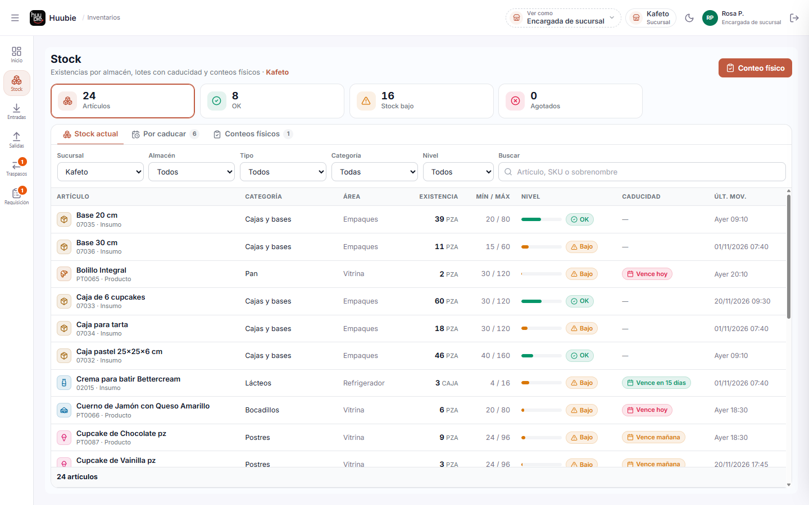
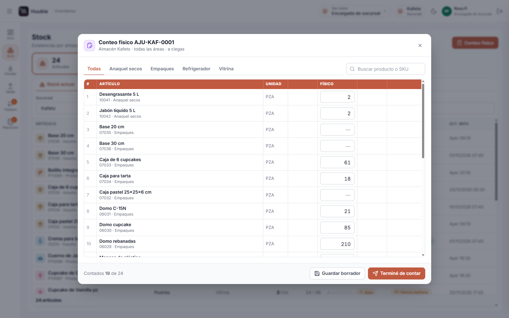
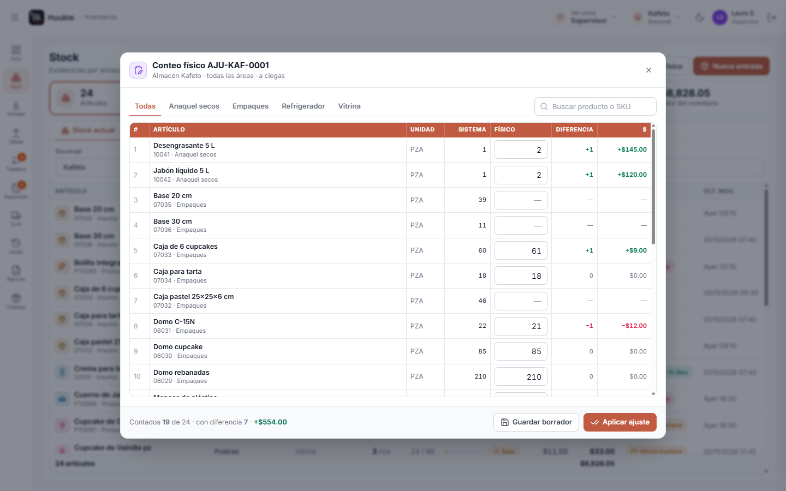
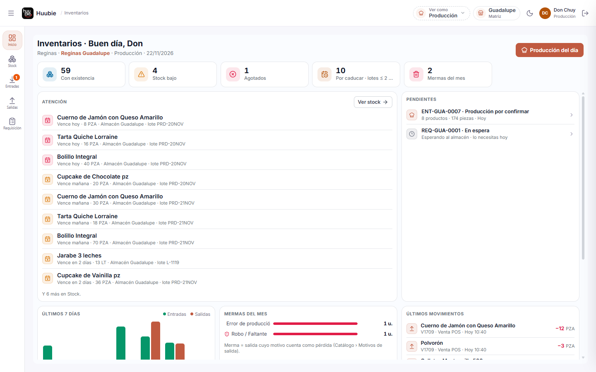
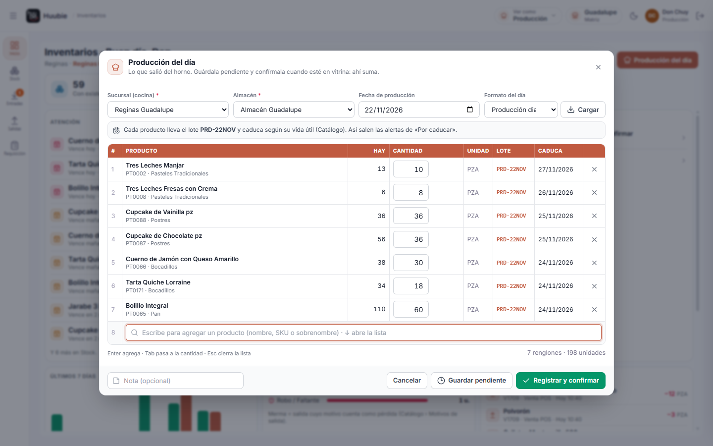

Cinco roles para el módulo Inventarios. Usan las mismas casillas por sección que ya existen en
Developer › Accesos › Roles y Permisos, más tres casillas nuevas. Las capturas son de la plantilla real con el
selector «Ver como»: pro/app/inventarios/templates/inventarios.html?rol=cajero.
Los nombres salen de los roles que Reginas ya tiene en fayxzvov_app.roles:
Dueño (2), Supervisor (9), Cajero (8), Producción (10) y Almacenista (7, hoy desactivado).
Las sucursales de cada persona no son permiso: salen de users_braches, igual que en Pedidos.
| Rol | Quién es en Reginas | Sucursales | Su día en Inventarios | Ve dinero |
|---|---|---|---|---|
| Dueña | Andrea M. | Las 3 | Mira el tablero, valor del inventario y mermas. Es la única que da de alta y de baja en el Catálogo. | Sí |
| Supervisor | Laura S. | Las 3 | Revisa: aplica los conteos que otros capturan, cancela documentos con contraseña y corrige el Catálogo. | Sí |
| Almacenista | Ramón L. | Matriz | Recibe compras con factura, surte requisiciones, envía traspasos y cuenta. No cancela ni aplica ajustes. | Solo en Entradas |
| Encargada de sucursal rol Cajero | Rosa P. (Kafeto) | La suya | Pide a la Matriz, da «Recibí», recibe traspasos, da de baja lo que caduca y cuenta a ciegas. | No |
| Producción | Don Chuy | Matriz | Registra y confirma la producción del día, pide insumos al almacén y anota lo que gasta o sale mal. | No |
Una opción sale en el menú lateral solo si el rol tiene la casilla «Ver» de esa sección. Inicio no es sección: lo ve todo el que entra al módulo, pero se arma con lo que cada uno puede atender.
| Opción del menú | Sección | Dueña | Supervisor | Almacenista | Encargada | Producción |
|---|---|---|---|---|---|---|
| Inicio | — | ✓ | ✓ | ✓ | ✓ | ✓ |
| Stock (y conteos) | inv-stock | ✓ | ✓ | ✓ | ✓ | ✓ |
| Entradas | inv-entradas | ✓ | ✓ | ✓ | ✓ | ✓ solo producción |
| Salidas (y mermas) | inv-salidas | ✓ | ✓ | ✓ | ✓ | ✓ |
| Traspasos | inv-traspasos | ✓ | ✓ | ✓ | ✓ | — |
| Requisición | inv-requisiciones | ✓ | ✓ | — | ✓ | ✓ |
| Surtir | inv-surtir | ✓ | ✓ | ✓ | — | — |
| Kárdex | inv-kardex | ✓ | ✓ | ✓ | — | — |
| Reportes | inv-reportes | ✓ | ✓ | — | — | — |
| Catálogo | inv-catalogo | ✓ | ✓ solo edita | ✓ solo ve | — | — |
| Opciones en el menú | 10 | 10 | 8 | 6 | 5 |
Así quedarían las casillas en Accesos › Roles y Permisos. En naranja, las tres nuevas. La última columna dice qué hace cada casilla en esa sección, porque «Editar» o «Cancelar» no significan lo mismo en todas.
| Sección | Dueña | Supervisor | Almacenista | Encargada | Producción | Qué hace cada casilla aquí |
|---|---|---|---|---|---|---|
| inv-stock | VerEditarCancelarImprimirVer costosAplicar ajuste | VerEditarCancelarImprimirVer costosAplicar ajuste | VerEditarImprimir | VerEditar | Ver | Editar = abrir y capturar un conteo · Aplicar ajuste = mover la existencia con el conteo · Cancelar = revertir un ajuste aplicado (hasta 48 h) |
| inv-entradas | VerAgregarProducirEditarCancelarImprimirVer costos | VerAgregarProducirEditarCancelarImprimirVer costos | VerAgregarEditarImprimirVer costos | Ver | VerProducirEditar | Agregar = compras, devoluciones y notas · Producir = producción del día · Editar = confirmar producción · Cancelar = cancelar una entrada aplicada (con contraseña) |
| inv-salidas | VerAgregarCancelarImprimirVer costos | VerAgregarCancelarImprimirVer costos | VerAgregarImprimir | VerAgregar | VerAgregar | Agregar = consumo y mermas · Cancelar = cancelar una salida (con contraseña) |
| inv-traspasos | VerAgregarEditarCancelarImprimirVer costos | VerAgregarEditarCancelarImprimirVer costos | VerAgregarEditarImprimir | VerEditar | sin sección | Editar = confirmar la recepción o rechazar · Cancelar = cancelar uno enviado que aún no recibían |
| inv-requisiciones | VerAgregarEditarCancelarImprimirVer costos | VerAgregarEditarCancelarImprimirVer costos | sin sección | VerAgregarEditarCancelar | VerAgregarEditarCancelar | Editar = corregir el borrador y dar «Recibí» · Cancelar = cancelar la propia si nadie la ha surtido |
| inv-surtir | VerEditarCancelarImprimirVer costos | VerEditarCancelarImprimirVer costos | VerEditarImprimir | sin sección | sin sección | Editar = surtir (descuenta de la Matriz y entra a quien pidió) · Cancelar = rechazar |
| inv-kardex | VerImprimirVer costos | VerImprimirVer costos | Ver | sin sección | sin sección | Sin «Ver costos» el kárdex cuenta renglones en vez de pesos |
| inv-reportes | VerImprimirVer costos | VerImprimirVer costos | sin sección | sin sección | sin sección | Imprimir = imprimir y descargar Excel |
| inv-catalogo | VerAgregarEditarEliminarVer costos | VerEditarVer costos | Ver | sin sección | sin sección | Eliminar = desactivar (nunca se borra) · una unidad en uso no se desactiva |
ver-costos), en cada sección. Sin ella desaparecen las columnas de costo, valor e importe, y las tarjetas de dinero se cambian por conteos. Va por sección para que el almacenista vea el costo de la factura que captura en Entradas sin ver el valor del inventario en Stock.aplicar-ajuste), en inv-stock. Quien no la tiene cuenta siempre a ciegas y su conteo se queda en borrador hasta que el Supervisor lo revisa (él sí ve sistema y diferencia) y lo aplica.producir), en inv-entradas. Separa la producción del día de las compras: Producción no captura facturas y el almacenista no registra producción.autorizar-descuento, ver-corte-z…): un renglón en type_permissions, uno en permissions por sección y la asignación en permissions_roles.
Capturas de la plantilla a 1440 × 900 con datos de Reginas. La barra trae el selector punteado «Ver como», que solo existe en la plantilla: en el módulo real el rol sale del usuario que inició sesión.









| # | Pregunta | Lo que propongo | Por qué importa |
|---|---|---|---|
| 1 | ¿La Encargada ve los costos de su sucursal? | No | Si los ve, se le da «Ver costos» en Stock y en Salidas; lo demás sigue igual. |
| 2 | ¿El Almacenista aplica sus propios conteos? | No: los aplica el Supervisor | Quien cuenta no debería cuadrar contra el sistema. Si sí, se le da «Aplicar ajuste» y deja de contar a ciegas. |
| 3 | Mínimo y máximo por sucursal | Sí | Hoy Kafeto marca 16 artículos en «Stock bajo» porque usa los mínimos de la Matriz. La tabla stock ya trae stock_min y stock_max por almacén; falta dónde capturarlos. |
| 4 | ¿La Encargada registra compras en su sucursal (la leche de Chedraui)? | No: la registra el Supervisor | Si sí, se le da «Agregar» en Entradas y hay que decidir si ve el costo que captura. |
| 5 | ¿Quién confirma la producción? | Producción | Si la confirma el Almacenista (cuando la recibe en vitrina), se le da «Producir» y «Editar» en Entradas. |
| 6 | ¿Se limita qué motivos de salida usa cada rol? | Sí, en la plantilla: Producción solo consumo, error de producción y merma | No es casilla. Si se quiere, va como columna de motivos por rol en el Catálogo; si no, todos usan todos. |
| 7 | El rol Almacenista de Reginas (id 7) está desactivado | Activarlo | Sin él, el almacén de la Matriz lo opera el Supervisor o la Dueña. |
inv-*, sus permissions y las 3 casillas nuevas en type_permissions. En producción, antes del código.withoutMoney).